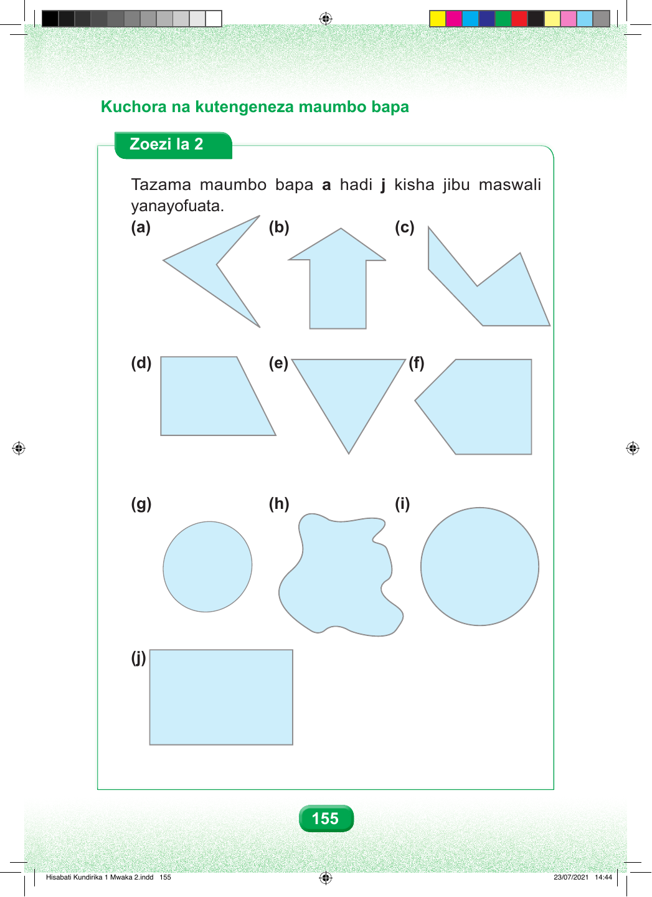

155 Kuchora na kutengeneza maumbo bapa Zoezi la 2 Tazama maumbo bapa a hadi j kisha jibu maswali yanayofuata. (a) (b) (c) (d) (e) (f) (g) (h) (i) (j) Hisabati Kundirika 1 Mwaka 2.indd 155 23/07/2021 14:44 Kuchora na kutengeneza maumbo bapa Zoezi la 2 Tazama maumbo bapa a hadi j kisha jibu maswali yanayofuata. (a) (b) (c) (d) (e) (f) (g) (h) (i) (j) 155 Hisabati Kundirika 1 Mwaka 2.indd 155 23/07/2021 14:44